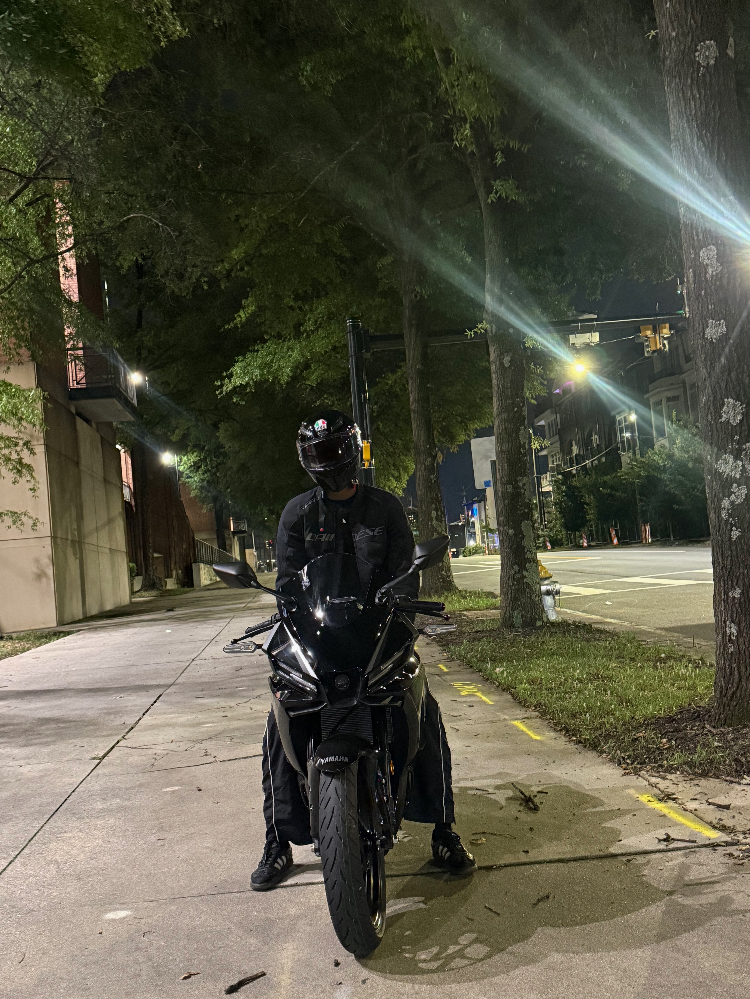

I created Prithvi's Garage to document my journey into the motorcycle lifestyle. As a Computer Science student at Georgia State University, I spend a significant amount of time coding and working on backend software infrastructure. Riding my 2026 Yamaha YZF-R3 gives me a different way to spend time away from the screen and experience the world hands-on. This website also lets me combine two interests that I am already developing: web development and motorcycles.
This site serves as a personal log where I can merge my interest in web development with my passion for riding. Buying my R3 was a major milestone, and I wanted a dedicated space to track my progress, review the gear I use, and keep a log of maintenance as I become a better rider. I also want the site to grow over time as I add more rides, photographs, modifications, and lessons from my experience as a newer rider.
Beyond just riding, I also enjoy videography. I plan to use my camera equipment to capture rides and document the mechanical side of owning a sport bike. The goal is simple: share the bike, the roads, the gear, and the lessons that make every ride a little better.